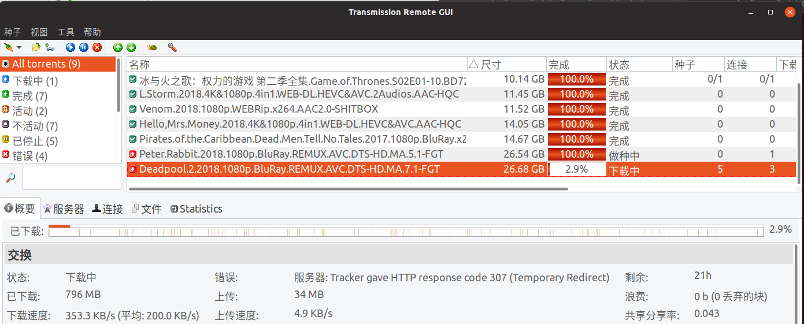

群晖安装transmission
最近购买了群晖的 NAS 218+ 作为照片备份和影音下载中心。既然要下载，一个下载工具就少不了。这个时候我选择了BT神奇： Transmission
什么是 Transmission
Transmission is a cross-platform BitTorrent client that is:
Open Source.
Transmission is an open source, volunteer-based project. Unlike some BitTorrent clients, Transmission doesn’t play games with its users to make money:
- Transmission doesn’t bundle toolbars, pop-up ads, flash ads, twitter tools, or anything else.
- It doesn’t hold some features back for a payware version.
- Its source code is available for anyone to review.
- We don’t track our users, and our website and forums have no third-party ads or analytics.
怎样在群晖安装
直接安装下面的教程一步步通过群晖套件安装就可以了。
教程参考
群晖新手进阶指南：root+transmission安装+增强汉化web+远程控制
使用transmission-web-control调用transmission
现在下载程序已经安装好在NAS了。接下来简单介绍下我平时怎样进行下载的。
手机端
手机端的话，直接下载好transmission软件，设置好服务器信息，打开种子，添加，就可以把种子添加到下载队列了。
pc端
无论你使用windows，linux还是使用NAS查看下载进度，你都可以通过神器 Transmission Remote GUI 添加下载任务和查看任务进度。详细的教程在github可以找到:
Transmission Remote GUI Github link
你也可以下载一个增强版的web ui来管理transmission.
transmission-web-control
大功告成：
